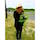
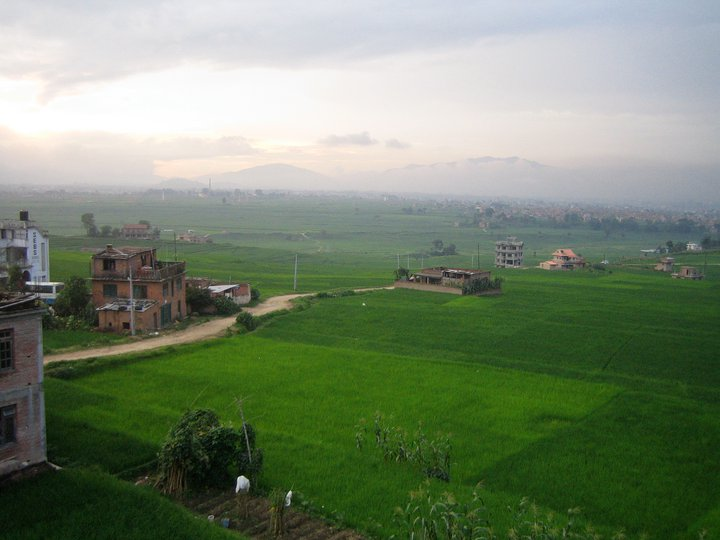

Asia
Laura's contribution 
for more info click here
Kathmandu
Kathmandu is the capital city of Nepal. There is a ton of history here and lots of beautiful sites to see. Before heading out on any trekking trip in the Himalayas or riding elephants in Chitwan National Park, you arrive and leave from Kathmandu.
Sample 3-day Itinerary
Day One: Visit Bhaktapur (one of the three Durbar Squares or urban centers with palaces and temples in the Kathmandu Valley). It is easy to spend a half day wondering around and if you hire a guide to give you a full tour, they can provide you with super detailed information about the religious festivals and myths. You could also easily rely on Google or a guidebook to describe the significance of the site. I would spend more time wondering around the craft shops and sitting outside to people watch.
Visit Changu Narayan (walking distance from Bhaktapur). This area is filled with beautiful temples, lots of statues, and a significant amount of artifacts. The site doesn’t get too many tourists but is well worth the visit.
Day Two: Visit Swayambhunath Temple “Monkey Temple.” The temple has both Hindu and Buddhist significance and is visited by tons of individuals every day. Since it is so busy, I would recommend spending about an hour checking out the stupa (the mound-like structure that contains Buddhist relics) and has painted Buddha eyes on the front and taking pictures of the monkeys grooming each other.
For the late morning and early afternoon, check out Thamel which is the bustling, touristy area of Kathmandu. There are tons of narrow streets filled with lots of shops and places to eat. While Thamel might be the best place to buy last minute trekking gear, shopkeepers are sure to overcharge you as a tourist. My recommendation for souvenirs/gifts (like jewelry or pashminas) is to purchase them “fair trade” in Patan.
Make your way over the Bagmati River to the second Durbar Square located in Patan. While it is similar to Bhaktapur, it is far more compact and can be seen in an hour. Prices are typically less negotiable in this area since you can guarantee you’re getting good quality, but I would try to bargain a bit. Shopping in this area supports several women’s rural employment projects.
Take a taxi/bus ride to the Tibetan Handicraft Center (near Ring Road). There is a huge population of Tibetan refugees that settled in Nepal and they are known to make beautiful rugs and tapestries. Prices are really reasonable and the center can even ship internationally if the rug can’t fit in your luggage.
Day Three:Visit Pashupatinath (another UNESCO World Heritage Site). While the actual temple is closed to non-Hindus, it is so fascinating to witness the ritual of washing dead bodies in the Bagmati River. Interestingly, it wasn’t until 1920 that “Sati,” the funeral custom where a widow immolated herself on her husband’s pyre, was outlawed. After the bodies have been washed, they are wrapped and draped with malas or marigolds. The bodies are then cremated in public. Out of respect, I wouldn’t hire any guides that bring you closer to the temple. Instead, you can watch this practice across the river where privacy is respected and the smoke isn’t as thick.
Visit Bouddhanath (another UNESCO World Heritage Site!) where you will see the largest stupa in Nepal and lots of monks turning the prayer wheels and chanting. I recommend trying some Tibetan bread and noodles for lunch. This is also an opportunity to purchase souvenirs.
Visit Kopan Monastery, a working monastery with some of the most beautiful views of Nepal. Visitors are welcome to go inside and walk around.
Find any and every opportunity to eat "momos" or "dumplings." The more suspicious the restaurant looks, the more delicious the momo!
Some good locations for food are in Lazimpat, Dilli Bazar, Pulchowk, and Jamsikhel (all areas that are less touristy). I don't think you can go wrong if you're willing to venture out of your comfort zone. I would recommend trying Daal Bhat which is the traditional Nepali dish. You will not be given silverware, so get used to eating with your hands.
OR2K and Fire and Ice are some safer options - While these restaurant are located in Thamel (the more touristy area) they are so delicious and a great break from traditional Nepali food.
Activities:Eating momos
Bargaining at the markets! As a tourist, you stick out like a sore thumb and shopkeepers are sure to inflate prices for you. Some helpful phrases are: "kati rupiyaa parchha?" - "how many rupees does this cost?", "chaindaina" - "not interested", and if someone asks you "kina?" -"why?" you can respond "tetikay" - which translates to "just because." If you don't respond, the salesmen will follow you down the street!
Seeing the UNESCO World Heritage Sites and people watching